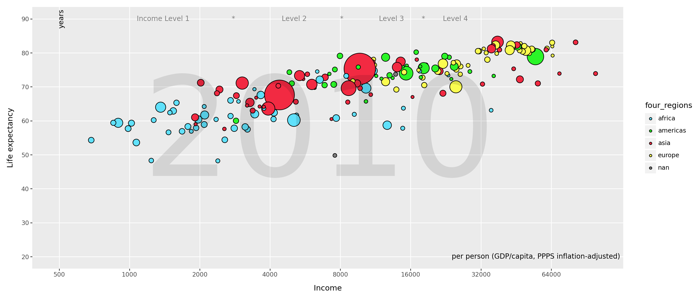
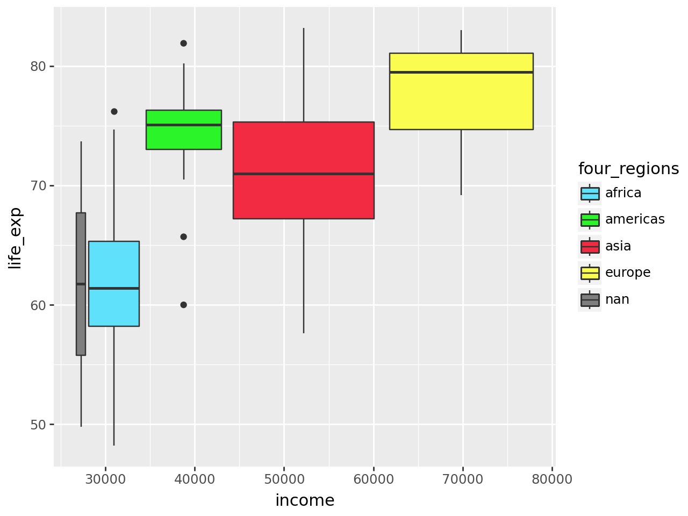
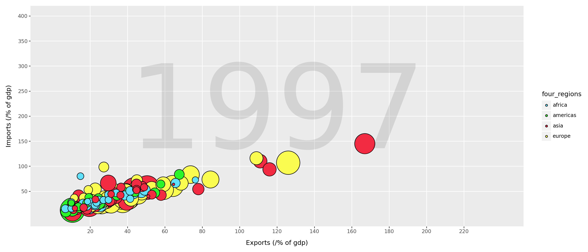
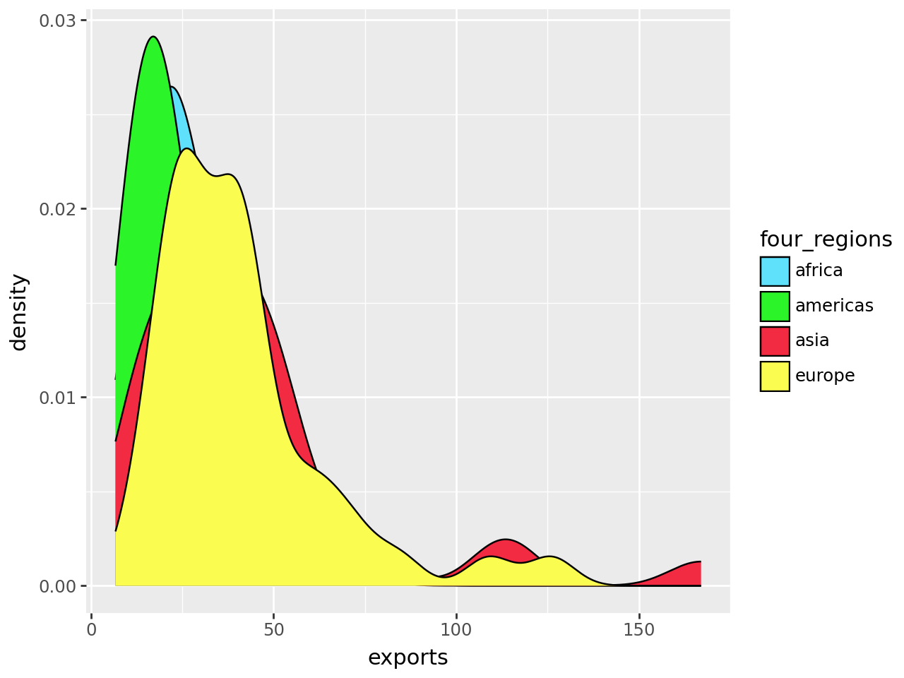
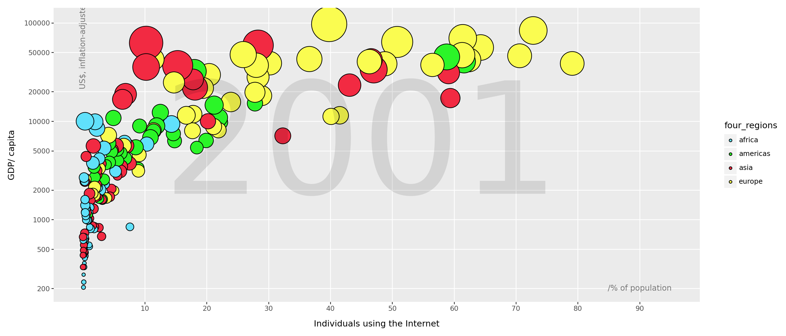
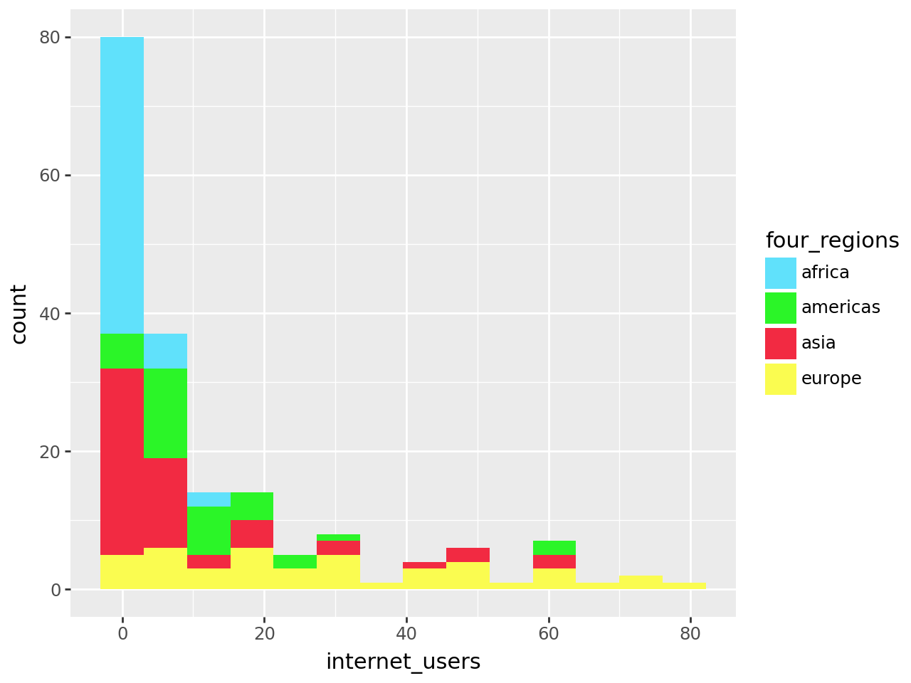

---
Title: Lab_1
author: Emily_Goodman
format:
html:
code-fold: true
toc: true
Theme: lux
embed-resources: true
---Cell In[166], line 2 author: Emily Goodman ^ SyntaxError: invalid syntax
---
Title: Lab_1
author: Emily_Goodman
format:
html:
code-fold: true
toc: true
Theme: lux
embed-resources: true
---Cell In[166], line 2 author: Emily Goodman ^ SyntaxError: invalid syntax
pip install plotnineRequirement already satisfied: plotnine in c:\users\emily\anaconda3.1\lib\site-packages (0.13.6)
Requirement already satisfied: matplotlib>=3.7.0 in c:\users\emily\anaconda3.1\lib\site-packages (from plotnine) (3.8.4)
Requirement already satisfied: pandas<3.0.0,>=2.1.0 in c:\users\emily\anaconda3.1\lib\site-packages (from plotnine) (2.2.2)
Requirement already satisfied: mizani~=0.11.0 in c:\users\emily\anaconda3.1\lib\site-packages (from plotnine) (0.11.4)
Requirement already satisfied: numpy>=1.23.0 in c:\users\emily\anaconda3.1\lib\site-packages (from plotnine) (1.26.4)
Requirement already satisfied: scipy>=1.7.0 in c:\users\emily\anaconda3.1\lib\site-packages (from plotnine) (1.13.1)
Requirement already satisfied: statsmodels>=0.14.0 in c:\users\emily\anaconda3.1\lib\site-packages (from plotnine) (0.14.2)
Requirement already satisfied: contourpy>=1.0.1 in c:\users\emily\anaconda3.1\lib\site-packages (from matplotlib>=3.7.0->plotnine) (1.2.0)
Requirement already satisfied: cycler>=0.10 in c:\users\emily\anaconda3.1\lib\site-packages (from matplotlib>=3.7.0->plotnine) (0.11.0)
Requirement already satisfied: fonttools>=4.22.0 in c:\users\emily\anaconda3.1\lib\site-packages (from matplotlib>=3.7.0->plotnine) (4.51.0)
Requirement already satisfied: kiwisolver>=1.3.1 in c:\users\emily\anaconda3.1\lib\site-packages (from matplotlib>=3.7.0->plotnine) (1.4.4)
Requirement already satisfied: packaging>=20.0 in c:\users\emily\anaconda3.1\lib\site-packages (from matplotlib>=3.7.0->plotnine) (23.2)
Requirement already satisfied: pillow>=8 in c:\users\emily\anaconda3.1\lib\site-packages (from matplotlib>=3.7.0->plotnine) (10.3.0)
Requirement already satisfied: pyparsing>=2.3.1 in c:\users\emily\anaconda3.1\lib\site-packages (from matplotlib>=3.7.0->plotnine) (3.0.9)
Requirement already satisfied: python-dateutil>=2.7 in c:\users\emily\anaconda3.1\lib\site-packages (from matplotlib>=3.7.0->plotnine) (2.9.0.post0)
Requirement already satisfied: tzdata in c:\users\emily\anaconda3.1\lib\site-packages (from mizani~=0.11.0->plotnine) (2023.3)
Requirement already satisfied: pytz>=2020.1 in c:\users\emily\anaconda3.1\lib\site-packages (from pandas<3.0.0,>=2.1.0->plotnine) (2024.1)
Requirement already satisfied: patsy>=0.5.6 in c:\users\emily\anaconda3.1\lib\site-packages (from statsmodels>=0.14.0->plotnine) (0.5.6)
Requirement already satisfied: six in c:\users\emily\anaconda3.1\lib\site-packages (from patsy>=0.5.6->statsmodels>=0.14.0->plotnine) (1.16.0)
Note: you may need to restart the kernel to use updated packages.
Requirement already satisfied: plotnine in c:\users\emily\anaconda3.1\lib\site-packages (0.13.6)
Requirement already satisfied: matplotlib>=3.7.0 in c:\users\emily\anaconda3.1\lib\site-packages (from plotnine) (3.8.4)
Requirement already satisfied: pandas<3.0.0,>=2.1.0 in c:\users\emily\anaconda3.1\lib\site-packages (from plotnine) (2.2.2)
Requirement already satisfied: mizani~=0.11.0 in c:\users\emily\anaconda3.1\lib\site-packages (from plotnine) (0.11.4)
Requirement already satisfied: numpy>=1.23.0 in c:\users\emily\anaconda3.1\lib\site-packages (from plotnine) (1.26.4)
Requirement already satisfied: scipy>=1.7.0 in c:\users\emily\anaconda3.1\lib\site-packages (from plotnine) (1.13.1)
Requirement already satisfied: statsmodels>=0.14.0 in c:\users\emily\anaconda3.1\lib\site-packages (from plotnine) (0.14.2)
Requirement already satisfied: contourpy>=1.0.1 in c:\users\emily\anaconda3.1\lib\site-packages (from matplotlib>=3.7.0->plotnine) (1.2.0)
Requirement already satisfied: cycler>=0.10 in c:\users\emily\anaconda3.1\lib\site-packages (from matplotlib>=3.7.0->plotnine) (0.11.0)
Requirement already satisfied: fonttools>=4.22.0 in c:\users\emily\anaconda3.1\lib\site-packages (from matplotlib>=3.7.0->plotnine) (4.51.0)
Requirement already satisfied: kiwisolver>=1.3.1 in c:\users\emily\anaconda3.1\lib\site-packages (from matplotlib>=3.7.0->plotnine) (1.4.4)
Requirement already satisfied: packaging>=20.0 in c:\users\emily\anaconda3.1\lib\site-packages (from matplotlib>=3.7.0->plotnine) (23.2)
Requirement already satisfied: pillow>=8 in c:\users\emily\anaconda3.1\lib\site-packages (from matplotlib>=3.7.0->plotnine) (10.3.0)
Requirement already satisfied: pyparsing>=2.3.1 in c:\users\emily\anaconda3.1\lib\site-packages (from matplotlib>=3.7.0->plotnine) (3.0.9)
Requirement already satisfied: python-dateutil>=2.7 in c:\users\emily\anaconda3.1\lib\site-packages (from matplotlib>=3.7.0->plotnine) (2.9.0.post0)
Requirement already satisfied: tzdata in c:\users\emily\anaconda3.1\lib\site-packages (from mizani~=0.11.0->plotnine) (2023.3)
Requirement already satisfied: pytz>=2020.1 in c:\users\emily\anaconda3.1\lib\site-packages (from pandas<3.0.0,>=2.1.0->plotnine) (2024.1)
Requirement already satisfied: patsy>=0.5.6 in c:\users\emily\anaconda3.1\lib\site-packages (from statsmodels>=0.14.0->plotnine) (0.5.6)
Requirement already satisfied: six in c:\users\emily\anaconda3.1\lib\site-packages (from patsy>=0.5.6->statsmodels>=0.14.0->plotnine) (1.16.0)
Note: you may need to restart the kernel to use updated packages.import pandas as pd
from plotnine import *q1data= pd.read_csv("data\q1data.csv")
q1data.head()<positron-console-cell-3>:1: SyntaxWarning: invalid escape sequence '\q'| income | life_exp | population | year | country | four_regions | six_regions | eight_regions | world_bank_region | |
|---|---|---|---|---|---|---|---|---|---|
| 0 | 1910.0 | 61.0 | 29200000.0 | 2010 | Afghanistan | asia | south_asia | asia_west | South Asia |
| 1 | 11100.0 | 78.1 | 2950000.0 | 2010 | Albania | europe | europe_central_asia | europe_east | Europe & Central Asia |
| 2 | 11100.0 | 74.7 | 36000000.0 | 2010 | Algeria | africa | middle_east_north_africa | africa_north | Middle East & North Africa |
| 3 | 46900.0 | 81.9 | 84500.0 | 2010 | Andorra | europe | europe_central_asia | europe_west | Europe & Central Asia |
| 4 | 7680.0 | 60.8 | 23400000.0 | 2010 | Angola | africa | sub_saharan_africa | africa_sub_saharan | Sub-Saharan Africa |
data2010 = q1data[q1data['year']==2010]
data2010=data2010.sort_values(by='income',ascending=False)
data2010.head()| income | life_exp | population | year | country | four_regions | six_regions | eight_regions | world_bank_region | |
|---|---|---|---|---|---|---|---|---|---|
| 101 | 108000.0 | 81.3 | 508000.0 | 2010 | Luxembourg | europe | europe_central_asia | europe_west | Europe & Central Asia |
| 142 | 99100.0 | 73.9 | 1860000.0 | 2010 | Qatar | asia | middle_east_north_africa | asia_west | Middle East & North Africa |
| 154 | 81400.0 | 83.1 | 5130000.0 | 2010 | Singapore | asia | east_asia_pacific | east_asia_pacific | East Asia & Pacific |
| 24 | 69400.0 | 73.9 | 389000.0 | 2010 | Brunei | asia | east_asia_pacific | east_asia_pacific | East Asia & Pacific |
| 114 | 64900.0 | 79.2 | 35600.0 | 2010 | Monaco | europe | europe_central_asia | europe_west | Europe & Central Asia |
colors= {
'americas': '#2bf528',
'africa': '#60e1fb',
'europe': '#fafc50',
'asia': '#f22a42'
}(ggplot(data2010,
aes(
x='income',
y='life_exp',
size='population',
fill='four_regions'
))
+ geom_point()
+ labs(x="Income", y="Life expectancy")
+ scale_x_log10(breaks=[500, 1000, 2000, 4000, 8000, 16000, 32000, 64000], limits=(500, 100000))
+ scale_size(range=(2, 25))
+ guides(size='none')
+ scale_y_continuous(breaks=[20, 30, 40, 50, 60, 70, 80, 90], limits=(20, 90))
+ annotate("text", x=6500, y=55, label="2010", size=200, color="black", alpha=.1)
+ theme(figure_size=(14,6), panel_grid_minor=element_blank())
+ scale_fill_manual(values=colors)
+ annotate("text", x=55000, y=20, label="per person (GDP/capita, PPPS inflation-adjusted)", size=10, color="black")
+ annotate("text", x=510, y=90, label="years", size=10, color="black", angle=90)
+ annotate("text", x=5500, y=90, label="Income Level 1 * Level 2 * Level 3 * Level 4", size=10, color="grey",)
)C:\Users\emily\anaconda3.1\Lib\site-packages\plotnine\layer.py:364: PlotnineWarning: geom_point : Removed 5 rows containing missing values.
(ggplot(data2010, aes(x = "income", y = "life_exp", fill = "four_regions"))
+ geom_boxplot()
+scale_fill_manual(values=colors)
)C:\Users\emily\anaconda3.1\Lib\site-packages\plotnine\layer.py:284: PlotnineWarning: stat_boxplot : Removed 2 rows containing non-finite values.
The boxplot above shows the relationship between income and life_exp seperated out by region. However the down side of this plot is that income is a continous value and by seperating it out into boxplot you are not showing the full extent of the data. It is forcing the data into bins thus limiting the story shown.
q2data= pd.read_csv("data\q2data.csv")
q2data.head()<positron-console-cell-18>:1: SyntaxWarning: invalid escape sequence '\q'| imports | exports | energy | year | country | four_regions | six_regions | eight_regions | world_bank_region | |
|---|---|---|---|---|---|---|---|---|---|
| 0 | NaN | NaN | NaN | 1997 | Afghanistan | asia | south_asia | asia_west | South Asia |
| 1 | 36.7 | 11.5 | 427 | 1997 | Albania | europe | europe_central_asia | europe_east | Europe & Central Asia |
| 2 | 22.5 | 22.6 | 825 | 1997 | Algeria | africa | middle_east_north_africa | africa_north | Middle East & North Africa |
| 3 | NaN | NaN | NaN | 1997 | American Samoa | NaN | NaN | NaN | NaN |
| 4 | NaN | NaN | 434 | 1997 | Angola | africa | sub_saharan_africa | africa_sub_saharan | Sub-Saharan Africa |
data1997 = q2data[q2data['year']==1997]
data1997["energy"] = data1997["energy"].astype(str)
data1997["energy"] = data1997['energy'].str.replace('k',"").astype(float)*1000
data2= data1997.dropna()
data2
data2['energy']= data2['energy'].astype(float)
data2=data2.sort_values(by='energy',ascending=False)
data2.head()<positron-console-cell-19>:6: SettingWithCopyWarning:
A value is trying to be set on a copy of a slice from a DataFrame.
Try using .loc[row_indexer,col_indexer] = value instead
See the caveats in the documentation: https://pandas.pydata.org/pandas-docs/stable/user_guide/indexing.html#returning-a-view-versus-a-copy| imports | exports | energy | year | country | four_regions | six_regions | eight_regions | world_bank_region | |
|---|---|---|---|---|---|---|---|---|---|
| 99 | 51.1 | 43.9 | 9170000.0 | 1997 | Kuwait | asia | middle_east_north_africa | asia_west | Middle East & North Africa |
| 84 | 38.1 | 33.8 | 9040000.0 | 1997 | Iceland | europe | europe_central_asia | europe_west | Europe & Central Asia |
| 32 | 38.1 | 40.0 | 7950000.0 | 1997 | Canada | americas | america | america_north | North America |
| 196 | 12.3 | 10.5 | 7800000.0 | 1997 | United States | americas | america | america_north | North America |
| 26 | 57.4 | 50.5 | 7290000.0 | 1997 | Brunei | asia | east_asia_pacific | east_asia_pacific | East Asia & Pacific |
(ggplot(data2,
aes(
x='exports',
y='imports',
size='energy',
fill='four_regions'
))
+ geom_point()
+ scale_size(range=(2, 25))
+ guides(size='none')
+ labs(x="Exports (/% of gdp)", y="Imports (/% of gdp)")
+ guides(size='none')
+ annotate("text", x=120, y=200, label="1997", size=200, color="black", alpha=.1)
+ theme(figure_size=(14,6), panel_grid_minor=element_blank())
+ scale_fill_manual(values=colors)
+ scale_y_continuous(breaks=[50, 100, 150, 200, 250, 300, 350, 400], limits=(0, 400))
+ scale_x_continuous(breaks=[20, 40, 60, 80, 100, 120, 140, 160, 180, 200, 220], limits=(00, 240))
)
(ggplot(data2,
aes(
x = "exports",
fill = "four_regions"
))
+ geom_density()
+ scale_fill_manual(values=colors)
)
A reason why we shouldn’t use the plot above is because it only shows export counts by country. It doesn’t show how exports change based on imports and energy consumption. It doesnt show every aesthetics we are trying to copy from the orignal graph. It lacks crucial information that tells the whole story.
q3= pd.read_csv("data\q3data.csv")
q3.head()<positron-console-cell-24>:1: SyntaxWarning: invalid escape sequence '\q'| internet_users | gdp | income | year | country | four_regions | six_regions | eight_regions | world_bank_region | |
|---|---|---|---|---|---|---|---|---|---|
| 0 | 0.00456 | 330.0 | 1190.0 | 2001 | Afghanistan | asia | south_asia | asia_west | South Asia |
| 1 | 0.39000 | 2570.0 | 6780.0 | 2001 | Albania | europe | europe_central_asia | europe_east | Europe & Central Asia |
| 2 | 1.59000 | 3770.0 | 9230.0 | 2001 | Algeria | africa | middle_east_north_africa | africa_north | Middle East & North Africa |
| 3 | NaN | 10500.0 | NaN | 2001 | American Samoa | NaN | NaN | NaN | NaN |
| 4 | 11.30000 | 42600.0 | 35600.0 | 2001 | Andorra | europe | europe_central_asia | europe_west | Europe & Central Asia |
q2001 = q3[q3['year']==2001]
q301= q2001.dropna()
q301
q301=q301.sort_values(by='internet_users',ascending=False)
q301.head()| internet_users | gdp | income | year | country | four_regions | six_regions | eight_regions | world_bank_region | |
|---|---|---|---|---|---|---|---|---|---|
| 87 | 79.1 | 38700.0 | 41500.0 | 2001 | Iceland | europe | europe_central_asia | europe_west | Europe & Central Asia |
| 145 | 72.8 | 83700.0 | 58700.0 | 2001 | Norway | europe | europe_central_asia | europe_west | Europe & Central Asia |
| 185 | 70.6 | 46300.0 | 42000.0 | 2001 | Sweden | europe | europe_central_asia | europe_west | Europe & Central Asia |
| 52 | 64.3 | 56200.0 | 49400.0 | 2001 | Denmark | europe | europe_central_asia | europe_west | Europe & Central Asia |
| 66 | 62.4 | 42000.0 | 41500.0 | 2001 | Finland | europe | europe_central_asia | europe_east | Europe & Central Asia |
(ggplot(q301,
aes(
x='internet_users',
y='gdp',
size='income',
fill='four_regions'
))
+ geom_point()
+ scale_size(range=(2, 25))
+ guides(size='none')
+ labs(x="Individuals using the Internet", y="GDP/ capita")
+ guides(size='none')
+ annotate("text", x=120, y=200, label="2001", size=200, color="black", alpha=.1)
+ theme(figure_size=(14,6), panel_grid_minor=element_blank())
+ scale_fill_manual(values=colors)
+ scale_x_continuous(breaks=[10,20,30,40,50,60,70,80,90], limits=(0, 95))
+ scale_y_log10(breaks=[200, 500, 1000, 2000, 5000, 10000, 20000, 50000, 100000], limits=(200, 104000))
+ annotate("text", x=90, y=200, label="/% of population", size=10, color="black", alpha=.5)
+ annotate("text", x=0, y=60000, label="US$, inflation-adjusted", size=10, color="black", angle=90, alpha=.5)
+ annotate("text", x=45, y=5000, label="2001", size=200, color="black", alpha=.1)
)C:\Users\emily\anaconda3.1\Lib\site-packages\plotnine\layer.py:364: PlotnineWarning: geom_point : Removed 1 rows containing missing values.
C:\Users\emily\anaconda3.1\Lib\site-packages\plotnine\layer.py:364: PlotnineWarning: geom_text : Removed 1 rows containing missing values.
(ggplot(q301,
aes(
x = "internet_users",
fill = "four_regions"
))
+ geom_histogram()
+ scale_fill_manual(values=colors)
)C:\Users\emily\anaconda3.1\Lib\site-packages\plotnine\stats\stat_bin.py:109: PlotnineWarning: 'stat_bin()' using 'bins = 14'. Pick better value with 'binwidth'.
The histogram above shows the distribution of counts of internet users based on which country they are from. However it doesn’t fully descirbe the picture we want to see. It lacks the information showing how internet users changes based on GDP and income.